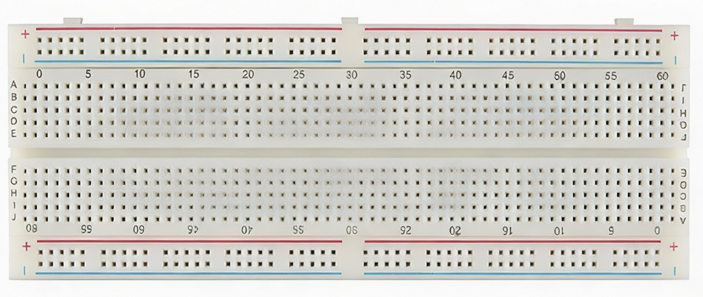

Electronic Breadboards (What They Are & How to Use Them)#
1. What Is a Breadboard?#
A breadboard (more precisely a solderless breadboard) is a reusable platform for building and testing circuits without soldering. It lets you quickly prototype, modify, and debug circuits—perfect for Arduino-based physics labs where you will:
connect sensors,
build voltage dividers,
create RC circuits,
test LEDs and switches,
measure signals before committing to a final design.
Breadboards are designed for convenience and speed. They are not ideal for high-current devices, high-frequency circuits, or long-term rugged builds—but they are excellent for learning and experimentation.
2. Breadboard Anatomy (What the Holes Mean)#
A breadboard looks like a grid of holes, but holes are connected internally in specific patterns.

A) Terminal Strips (Middle Area)#
The middle section is usually split by a center gap.
Each side of the center gap contains rows of holes (sometimes labeled
ABCDE - FGHIJ).In most standard breadboards, each row of 5 holes is electrically connected (a “group”).
The two sides of the center gap are not connected to each other.
Why the center gap exists:
Many integrated circuits (ICs) and some sensors have two rows of pins. The gap allows an IC to “straddle” the center so that each pin lands in a different connected group (so pins don’t get shorted together).
B) Power Rails (Side Strips)#
Along the left and right edges are long columns called power rails.
These are used for distributing +V (like 5V or 3.3V) and GND across the board.
Many breadboards mark them with red (+) and blue/black (−) lines.
Important: On some breadboards the rails are split in the middle, meaning the top half and bottom half are not connected unless you add a jumper wire.
Rule of thumb: Always assume rails might be split until you verify or intentionally bridge them.
3. How to Use a Breadboard (Practical Rules)#
Rule 1 — One component lead per connected group#
If you put two leads into the same connected group (same row-of-5), you are electrically tying them together.
Rule 2 — Use rails intentionally#
A common layout is:
Left rail: GND
Right rail: +5V (or +3.3V)
Then you can easily connect components to power without running long wires.
Rule 3 — Keep wiring tidy#
Messy wiring causes:
mistakes,
hard-to-debug circuits,
accidental shorts.
Use short jumpers, right-angle paths, and consistent colors when possible:
Red for +V
Black for GND
Other colors for signals
Rule 4 — Never “guess” connections#
Breadboards look repetitive. Misplacing a wire by one hole is one of the most common errors. Work slowly and verify:
which row/group you are using,
whether you crossed the center gap correctly,
whether you connected the rails the way you think.
4. Common Breadboard Mistakes (and How to Avoid Them)#
Mistake A — Shorting power to ground#
If you connect +5V directly to GND, the Arduino may reset, the USB port may shut down, or components may overheat.
Prevention: Before powering, visually check:
+V rail isn’t connected to GND rail by a jumper.
Components aren’t accidentally bridging rails.
Mistake B — Putting both LED legs into the same group#
If both LED legs go into the same connected group, the LED is effectively shorted to itself and won’t behave as expected.
Prevention: Put the LED legs on different rows (often across the center gap).
Mistake C — Floating inputs (unconnected signal pins)#
A digital input pin that is not tied to HIGH or LOW may randomly fluctuate.
Prevention: Use:
pull-down or pull-up resistors, or
Arduino’s internal pull-up feature when appropriate.
Mistake D — Assuming rails are continuous#
Some breadboards split the rails; your circuit “works” on one half but not the other.
Prevention: If needed, bridge the rail split with a jumper wire.
5. A First Breadboard Test Circuit (LED + Resistor)#
This is a classic “sanity check” circuit to verify your breadboard wiring habits.
Components#
1 LED
1 resistor (typically 220 Ω to 1 kΩ)
jumper wires
Arduino (for 5V and GND supply)
Concept#
The resistor limits current so the LED doesn’t burn out.
Wiring Idea (description)#
Connect Arduino GND to the breadboard GND rail.
Connect Arduino 5V to the breadboard + rail.
Place the LED so its two legs are not in the same connected group.
Connect one LED leg to GND through the resistor.
Connect the other LED leg to +5V (or later to a digital pin for blinking).
Tip: LED polarity matters.
The longer leg is usually the anode (+).
The shorter leg is usually the cathode (−).
Many LEDs also have a flat edge on the cathode side.
6. Best Practices for Arduino Labs#
Power off / unplug USB when changing wiring (especially early on).
Build in small steps: power rails → component placement → signal wiring.
After each step, pause and check:
Are the rails correct?
Are any bare wires touching?
Are components placed across separate groups?
If something doesn’t work, debug systematically:
confirm power and ground,
confirm continuity of the rails,
confirm each node is where you think it is.
Quick Self-Check (Concept Questions)#
On a standard breadboard, how many holes are typically connected together in one terminal strip group?
Why is there a center gap in the breadboard?
What happens if you connect +5V directly to GND?
Why might a digital input pin behave randomly if nothing is connected to it?
What is the purpose of the resistor in series with an LED?
Summary#
A breadboard is a fast, reusable way to prototype circuits. The key skill is understanding which holes are connected internally:
rows of 5 in the middle terminal strips,
long power rails on the sides (sometimes split),
a center gap that isolates the two sides.
Once you understand the internal connections, breadboarding becomes a reliable, powerful tool for building Arduino-based physics experiments.